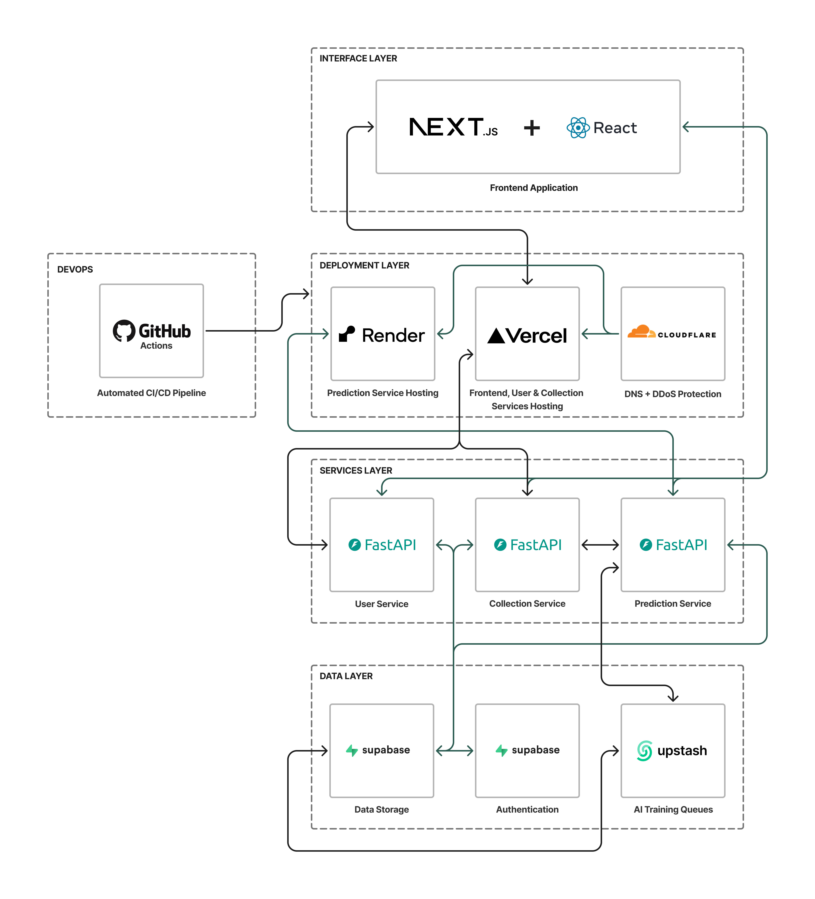

A unified equity research platform that combines market data, news, and explainable summaries into a single company brief.
Adam Schon, Adnan Hameed Sadiq, Saqib Rashid, Sujith Korishetty, Tazin Saiyed
Users currently juggle multiple disconnected tools — creating wasted time, cognitive overload, and a higher barrier for beginners.
One search. One brief. Everything in one place.
Stock & Tell is an investment support tool — not an automated decision-maker.
Our strongest audience is people who want an accessible and reliable starting point — not expert traders.
Strong platforms already exist, but most focus on one part of the equity research workflow.
A four-step workflow designed to be frictionless from first search to saved insight.
Our product is built on reusable microservices — a real platform, not a monolith.
Separated concerns — each service evolves independently while contributing to one coherent product.

Our services aren't tied to one frontend — they're built to be consumed by other teams and systems.
A production-grade delivery pipeline from first commit to live environment.
A working prototype deployed in the ecosystem. Here's what we'll walk through.
| Challenge | Our Response | |
|---|---|---|
| External API reliability | Fallback handling, caching, and response validation throughout the collection pipeline. | |
| Custom API key management | a custom API key management layer on top of authentication. | |
| Maintaining interoperability | Standardised schemas, public OpenAPI docs, and consistent data contracts. | |
| Deployment confidence | Staged environment pipeline (dev → staging → prod) with full test coverage at each stage. | |
| Limitations of strong free platforms | Working within the limitations of strong free platforms and free-tier tools. |
Moving from backend platform to user-facing product taught us as much about product thinking as it did about engineering.